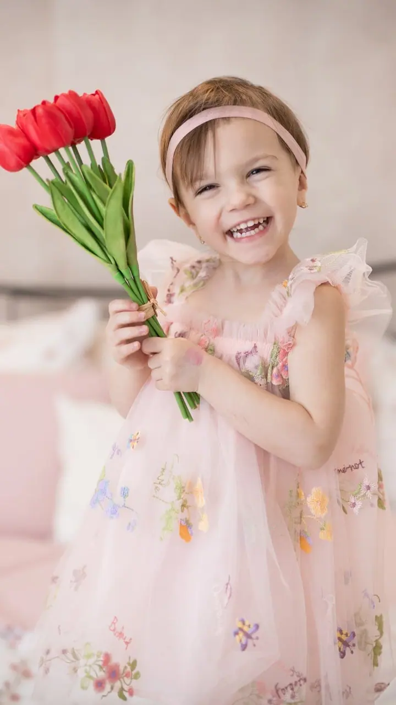
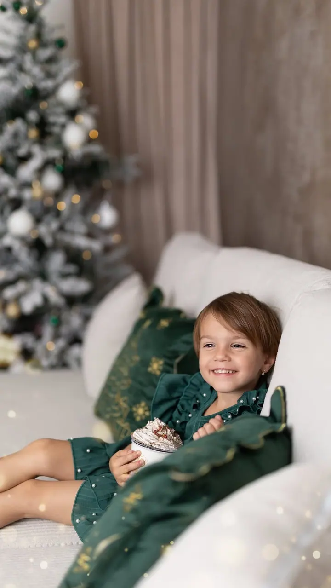
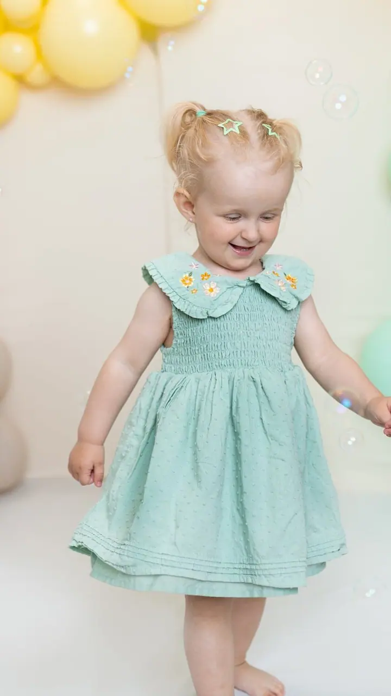
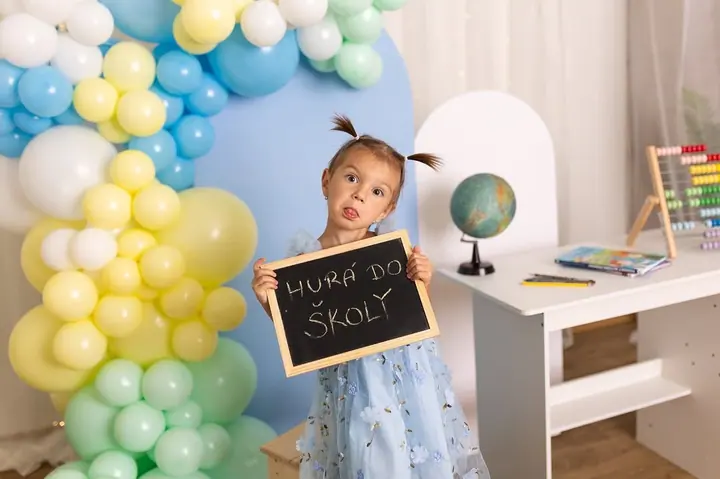
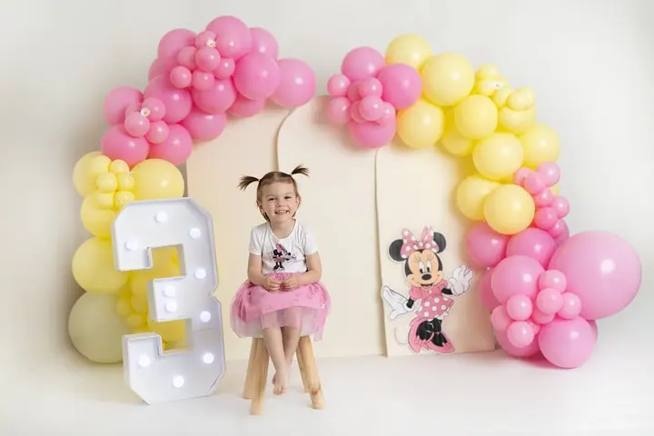

Newborn focení
Newborn focení je hlavně o klidu a o prvních dnech života vašeho miminka. Fotíme do 14 dnů od narození ve vyhřátém ateliéru a kdykoliv uděláme pauzu na krmení, přebalení nebo pomazlení.




Jmenuji se Veronika Světelská a jsem rodinná a newborn fotografka ze Solnice u Rychnova nad Kněžnou. Fotím miminka, maminky v naději i celé rodiny s dětmi, ve svém ateliéru nebo venku v přírodě.
Více o mně
„Jako maminka dvou malých dětí mám pro tyto křehké okamžiky hluboké porozumění.“
— Veronika Světelská
Newborn focení je hlavně o klidu a o prvních dnech života vašeho miminka. Fotíme do 14 dnů od narození ve vyhřátém ateliéru a kdykoliv uděláme pauzu na krmení, přebalení nebo pomazlení.
Žádné strojené pózy, focení probíhá uvolněně a hravě. Vyrazit můžeme ven na louku nebo do parku, anebo zůstaneme v pohodlí a soukromí ateliéru.
V útulném ateliéru nebo venku v přírodě. Celým focením vás v klidu provedu a pomůžu vám s přirozeným pózováním. Těhotenské šaty vám ráda zapůjčím.
Vánoční focení ve třech scénách, narozeninové focení s balónky a dortem alá cake smash nebo Back to school. Téma je jen na vás.
Jsem fotografka ze Solnice u Rychnova nad Kněžnou a maminka dvou malých dětí. Rodinný život balancuji s vášní pro focení a mým hlavním zaměřením je newborn a rodinná fotografie. Právě díky vlastním dětem mám pro ty křehké první dny hluboké porozumění.
Splnila jsem si sen a zařídila si svůj dlouho vytoužený ateliér v Solnici. Je vybavený kvalitními zábleskovými světly a různými plátny, abychom mohli vytvořit fotografie přesně podle vašich představ. Na newborn focení tu mám připravené dečky, košíky i oblečení pro miminko, na těhotenské focení šaty k zapůjčení.
Kromě miminek a rodin fotím i těhotenské portréty, narozeninová a vánoční focení, portréty a menší rodinné svatby. Když je hezky, ráda vyrazím ven, třeba na podzimní focení v barevném listí. Těším se na naše společné focení!
Ozvěte se přes kontaktní formulář, e-mailem nebo zprávou na Instagramu a domluvíme termín, který vám bude vyhovovat.
Probereme, jestli budeme fotit v ateliéru, nebo v přírodě, a co si vzít na sebe. Oblečení pro miminko i těhotenské šaty vám zapůjčím.
Klasické focení trvá okolo hodinky, newborn okolo dvou hodinek. Nikam nespěcháme a pauzy děláme, kdykoliv je potřeba.
Pošlu vám náhledy a vy si vyberete 10 fotografií, které profesionálně upravím a předám v elektronické podobě.
Nejlépe hned v prvních dvou týdnech od narození. Do 14 dnů miminka ještě hodně spinkají a dají se krásně a bezpečně polohovat.
Stačí pohodlné, jednoduché oblečení v jemných barvách. Oblečení pro miminko i těhotenské šaty mám k zapůjčení a na vánoční focení bude připravený i šatník.
Klasické focení rodin, portrétů, párů, těhotenství nebo mazlíčků začíná na 2 000 Kč, newborn focení na 2 500 Kč. V ceně je 10 upravených fotografií, každá další stojí 120 Kč.
Obojí, volba je na vás. Ateliér v Solnici nabízí soukromí a stálé podmínky bez ohledu na počasí, příroda zase dodá fotkám energii a krásné kulisy.
svetelska-foto@seznam.cz
Solnice · Rychnov nad Kněžnou